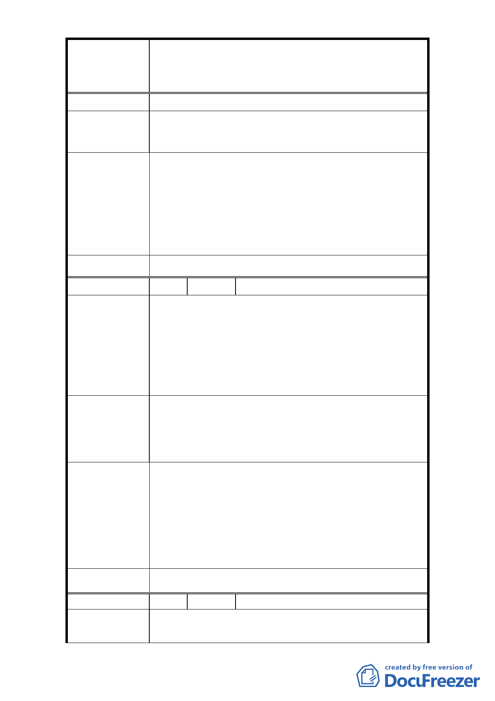

修訂臺北市大安區青田街保存區聚落風貌保存專用區細部計
案
名
畫、變更部分第三種住宅區、第三種商業區(特)為第三種住宅區
(特)(日式宿舍)及第三種商業區(特)(日式宿舍)暨劃定週邊地
區都市設計管制細部計畫案
用保存區為維持其風貌，可能會限制開放規模及高度。
放寬建蔽率於 5%為 50%，有效控制建物之風貌不致影響
建 議 辦 法 原日式住宅區專用區之建物風貌。
1. 計畫區內第三種住宅區建蔽率 45%、容積率 225%係
依「臺北市土地使用分區管制自治條例」全市性規
定管制。
市 府 回 覆 意 見 2. 本次修訂計畫針對本地區之都市設計以及容積管
控進行修改，期能兼顧文化資產保存與居民之土地
開發利益。
委 員 會 決 議 依市府回覆意見辦理。
編 號 10 陳情人 劉美玲、鍾慧秀、楊永吉
1. 依臺北市土地使用分區管制規則第十條規定第三種
住宅區建蔽率為 50%，容積率為 225%。
2. 開挖率：本土地斜對面（基督教長老教會）其開挖
陳 情 理 由 率似近 100%。都市計畫委員會由原建築基地其開挖
率以 60%為上限，擬「刪除」不作任何限制，已跳脫
框架，值得喝彩。
1. 請 貴委員會比照，切勿剝奪人民權益，以示公平。
2. 請比照教會方式處理，以維公平正義。但希望能明
建 議 辦 法 文訂出上限為妥適，讓人民有所遵循，藉以維護週
邊之環境之景觀。
1. 計畫區內第三種住宅區建蔽率 45%、容積率 225%係
依「臺北市土地使用分區管制自治條例」全市性規
定管制。
市 府 回 覆 意 見 2. 該教會係於本府 96 年公告計畫案前申請建築，故
無開挖率 60%上限規範。
3. 為兼顧文化資產保存及土地開發權益，已將本計畫
區分三層級管制開挖率。
委 員 會 決 議 依市府回覆意見辦理。
編 號 11 陳情人 吳世民
青田街內舊有之日式房舍有的破爛有的已為平地還在
陳 情 理 由 保留真是公務單位怠忽職守的表現。
- 14 -